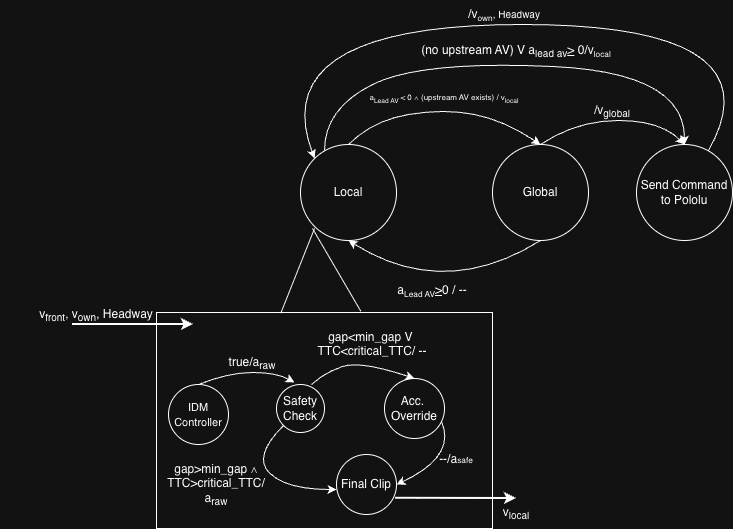

Traffic Mitigation Research
This is a continuation of the work I did in EECS149. While it may never be published, I find traffic to be a fascinating
problem and I’m mainly doing this to understand when learning helps (and when it breaks) in safety-critical control.
Maybe one day, the 405 will be rid of traffic.
I’m blogging progress here as a way to keep the scope honest, the protocol reproducible, and my thoughts organized.
Dec 30, 2025 [Finalizing scope, metrics, and decision rules]
> goal (what question am I answering?)
Build a small, repeatable benchmark that compares structured control vs learned control for traffic smoothing under realistic deployment constraints.
The concrete question:
Across congestion and latency regimes, which controller family achieves the best safety–throughput tradeoff, and where
do learned policies outperform structured control (or fail)?
> scenario (frozen benchmark setup)
Primary scenario: single-lane ring road (closed loop). This isolates stop-and-go dynamics without boundary effects.
- Road: 1 lane, circular track of fixed circumference
L. - Congestion knob: vehicle density via
N(number of cars). Evaluate atN ∈ {N_low, N_mid, N_high}. - Initial conditions: cars evenly spaced with small perturbations in spacing and speed (to seed waves).
- AV penetration: evaluate at
p_av ∈ {0%, 10%, 30%, 50%}. AVs placed evenly around the ring (fixed placement rule). - Episode length: fixed horizon
T(or terminate early on collision / min-gap breach).
Optional later extension (not in v1): open highway with an arrival process and merges. I’m not starting there because it adds boundary-driven confounders.
> human driving model (realistic, minimal, not “psychology”)
Human-driven vehicles are modeled as IDM controllers with three realism ingredients. The goal is to generate realistic waves and rare disturbances without turning modeling into an open-ended behavioral science problem.
- Population heterogeneity (static): each human samples IDM parameters from distributions (e.g., desired speed, time headway, braking aggressiveness). This alone creates nontrivial instability.
-
Temporally correlated variability (dynamic): apply a low-amplitude Ornstein–Uhlenbeck (OU) process
to desired speed
v0(t)(or acceleration). This yields “drift/hesitation” rather than i.i.d. randomness. - Reaction time: humans respond with a small delay to the lead vehicle state (finite reaction time).
Stretch goal: a small “distracted driver” mode with rare short windows of increased reaction time (to simulate occlusion / attention lapses).
> uncertainty knobs (Waymo/Tesla-like realism)
I assume high-quality sensing (small measurement error), but I explicitly model the deployment issues that remain even in state-of-the-art stacks: latency, jitter, asynchronous updates, actuator dynamics, and occasional dropouts.
- Control latency: delay between decision and applied acceleration (
τ_controltimesteps). - Perception delay / update rate: state updates arrive at lower rate than control; optionally add small jitter.
- Actuator lag: acceleration follows commands with first-order lag (finite response time).
- Observation dropout: rare short bursts of missing lead state (tracking loss / occlusion proxy).
- V2V latency + packet loss (if comms used): upstream braking signals arrive late or occasionally missing.
Note: I am not injecting large sensor noise. If I include measurement noise at all, it will be small and structured (bias + low variance), primarily to test near-boundary robustness.
> no adversarial drivers (v1 design choice)
I am not including a front adversarial drivers in this version of the project (as I did for 149). This is a v1 design choice to keep the scope manageable and focus on the core problem: how to make a structured controller robust under realistic uncertainty.
> controllers (what I’m comparing)
I’m comparing one strong structured baseline against learned policies with discrete and (optionally) continuous action spaces.
- Structured baseline: IDM + event-driven FSM + conservative V2V braking propagation (upstream braking can influence deceleration, never override local safety).
- Learned (discrete): DQN policy with discretized acceleration actions (embedded-feasible, but potentially brittle near safety boundaries).
- Learned (continuous) [optional]: one continuous-control method (e.g., DDPG/SAC-style) to test whether action discretization is a major confounder.
All controllers are evaluated on the same scenario distribution and under the same uncertainty knobs.
> metrics (what I measure)
Metrics are chosen to prevent “cheating” (e.g., being safe by driving extremely slowly) while still reflecting what matters in traffic: safety first, then throughput, then stability/comfort.
-
Safety (primary):
collision rate (or min-gap breach), TTC violation rate under threshold
TTC < τ, and minimum-TTC statistics (e.g., 5th percentile). - Throughput (primary): average fleet speed over the episode (or flow if I later add an arrival process).
- Stability / wave suppression (supporting): speed variance over time (captures stop-and-go amplitude).
- Comfort (supporting): jerk proxy (e.g., mean absolute change in acceleration per timestep).
For plots, I will primarily report safety–throughput frontiers, and use stability/comfort to explain failure modes.
> decision rule (what it means to “beat” another controller)
The comparison is deliberately strict. Safety violations are disqualifying. I’m not ranking by reward; I’m ranking by constraints and outcomes.
- Safety gate (must pass): a controller is considered valid in a regime only if it satisfies explicit safety constraints (e.g., collision rate ≤ a fixed threshold across evaluation episodes, and TTC violations below a threshold).
- Throughput ranking (among safe controllers): among controllers that pass the safety gate, higher throughput wins (average fleet speed, reported with confidence intervals across seeds).
- Stability/comfort as tie-breaker + explanation: if throughput is similar, prefer lower speed variance and lower jerk. These metrics are also used to explain how a controller achieves its performance.
Result format: for each (congestion, latency) regime, label the winner and summarize why (safe + faster, or unsafe, or stable/unstable).
> success criteria (simple and testable)
This thread is successful if I produce:
- One safety–throughput frontier plot comparing structured control vs learned control across a small grid of realistic latency and congestion regimes, and
- One regime map that clearly shows where learned policies are competitive (pass safety + win on throughput) and where they fail (safety violations or instability).
That’s it. The goal is not complexity; the goal is an honest, repeatable benchmark that reveals tradeoffs.
> next steps (v1 checklist)
- Implement the ring-road simulator + logging (gap, rel-vel, TTC, accel, jerk proxy).
- Implement knobs for latency and error.
- Start with all humans with no V2V communication and no latency/error. Generate plots. This is the true baseline.
- Create and evaluate the how well the FSM+IDM with V2V approach performs (with different uncertainty knob settings) against the baseline of all humans.

Dec 31, 2025 [Baseline + observability]
> progress
Implemented the ring-road simulator with IDM human drivers, OU-based temporal variability, and human-like reaction times. Verified that stop-and-go waves emerge naturally at higher densities without any scripted disturbances. I also decided to sample driving parameters for each car using gaussian distributions.
Added full metric logging (TTC, min-gap, speed variance, jerk) and validated correctness via per-episode trace plots. Established the true baseline: all-human traffic with no V2V, no latency, and no actuator lag.
Next step: Introduce human IDM heterogeneity, with the FSM+IDM controller with "perfect" conditions.
> results
View simulation results, plots, and parameters
25 Humans (300m track)

20 Humans (300m track)
15 Humans (300m track)
10 Humans (300m track)
Simulation Parameters
| Parameter | Value | Description |
|---|---|---|
| Ring Geometry | ||
circumference |
300 m | Ring road length |
vehicle_length |
5 m | Vehicle length |
| IDM Parameters | ||
v0 |
25 m/s | Desired velocity |
T |
1.5 s | Safe time headway |
s0 |
2 m | Minimum gap |
a |
1.5 m/s² | Max acceleration |
b |
2.0 m/s² | Comfortable deceleration |
delta |
4 | Acceleration exponent |
| IDM Heterogeneity (per-driver sampling) | ||
v0_std |
3.0 m/s | Desired velocity std dev |
T_std |
0.3 s | Time headway std dev |
a_std |
0.3 m/s² | Max acceleration std dev |
b_std |
0.3 m/s² | Comfortable decel std dev |
| Temporal Variability (OU Process) | ||
ou_theta |
0.1 | Mean reversion rate (1/s) |
ou_sigma |
0.02 | Volatility (fraction of v0) |
| Simulation Timing | ||
dt |
0.1 s | Timestep |
reaction_delay |
0.3 s | Human reaction time (3 steps) |
duration |
300 s | Episode length (5 min) |
Note: Using absolute minimum (not 5th percentile) for Min Gap and Min TTC to ensure worst-case safety events are never hidden.
Results Comparison
| Metric | 25 Humans | 20 Humans | 15 Humans | 10 Humans |
|---|---|---|---|---|
| Speed | ||||
| Avg Speed (m/s) | 3.33 | 5.35 | 8.72 | 15.06 |
| Std Speed | 0.22 | 0.40 | 0.80 | 1.75 |
| Avg Speed Variance | 0.88 | 1.14 | 1.53 | 0.05 |
| Max Speed Variance | 2.41 | 4.56 | 4.49 | 0.63 |
| Safety | ||||
| Min Gap Ever (m) | 3.27 | 4.46 | 8.34 | 18.82 |
| Avg Min Gap (m) | 4.61 | 7.00 | 10.88 | 21.57 |
| Min TTC Ever (s) | 3.71 | 5.01 | 8.45 | 21.62 |
| TTC Below 2s Fraction | 0.00 | 0.00 | 0.00 | 0.00 |
| Comfort | ||||
| Avg Abs Jerk (m/s³) | 0.08 | 0.06 | 0.07 | 0.06 |
| Max Abs Jerk (m/s³) | 0.41 | 0.28 | 0.21 | 0.15 |
> takeaways and next steps
The current IDM time headway (T=1.5s) is too conservative, causing unrealistically low speeds even at moderate densities. The 15-20 vehicle range on 300m appears promising for demonstrating control benefits, but needs validation with realistic parameters.
The goal is to find the "sweet spot" regime where speed variance is high (waves forming) but throughput still has room for improvement—this is where V2V communication or a learned policy can demonstrate measurable gains over the all-human baseline.
Next steps: (1) Tune IDM parameters to match real highway behavior, (2) sweep vehicle counts to find the critical density for wave formation, and (3) validate the promising density range with the updated parameters.
Jan 1, 2026 [Structured control under uncertainty]
> progress
TBD